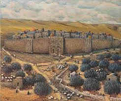

- בניית בית בארץ ישראל היא מצווה מהתורה חלק ממצוות יישוב ארץ ישראל. גם המרחיב את ביתו הקיים, מקיים מצווה זו. וצריך לכוין לשם מצווה.
- במשנה (סוטה ח, ב) נאמר שלא רק בונה בית חוזר מעורכי המלחמה, אלא גם קונה בית קיים חוזר. שכשם שיש מצווה ליישב את הארץ כך גם מצווה על אדם להתיישב בארץ, וקניית בית הרי היא חלק מההתיישבות בארץ.
- גם הקונה בית בא"י, שכבר גרים בו שנים רבות ולא התרבה על ידי הקנין ישוב הארץ, יש בזה מצווה, כדי שהאדם יתחבר לארץ ויחבבה.
- למצווה זו ישנם השלכות הלכתיות בכמה נושאים: א. הבונה בית בארץ ישראל לגור בו, ועדיין לא גר בו פטור משירות בצבא עד שיזכה לחנוך את הבית. ב. הבונה בית וחנכו פטור מכל שירות בצבא, אפילו שירות בעורף למשך שנה שלמה. ג. יש אומרים שיש מצווה לאדם שבנה בית לשמוח שנה שלמה בקניין הבית. ד. סעודת חנוכת הבית בארץ ישראל היא סעודת מצווה. ה. הרבה נהגו לברך שהחיינו בחנוכת הבית בארץ ישראל. כל זה בנוסף למעלה גדולה שיש לקונה קרקע בארץ ישראל, ונחשב כקונה חלק בעולם הבא.
- עדיף לבנות בית חדש מאשר לקנות בית ישן, כדי להוסיף על יישוב הארץ.
- עדיף לבנות בית במקום לא בנוי, שבזה מיישב את הארץ, מאשר בית בין בתים.
- נאמר בתורה (דברים פרק כ, ה): "וְדִבְּרוּ הַשֹּׁטְרִים אֶל הָעָם לֵאמֹר מִי הָאִישׁ אֲשֶׁר בָּנָה בַיִת חָדָשׁ וְלֹא חֲנָכוֹ יֵלֵךְ וְיָשֹׁב לְבֵיתוֹ פֶּן יָמוּת בַּמִּלְחָמָה וְאִישׁ אַחֵר יַחְנְכֶנּוּ". התורה פוטרת מהצבא במלחמת הרשות, אדם שבנה בית בארץ ישראל ועדיין לא זכה לגור בו. לדעת הרמב"ם בונה בית שהולך לצבא עובר בלאוו.
- דין זה נאמר רק במלחמת הרשות, אבל במלחמת מצווה אין פטור, ואפילו יש חיילים נוספים מותר לגייס את הבונה בית.
- המוסיף חדר על ביתו בגודל ארבע על ארבע אמות, מקיים מצוות ישוב הארץ וחוזר מעורכי המלחמה.
- בבן איש חי כתב, אין מנהג לעשות חנוכת הבית על הוספת חדר לבית. יש אומרים שרק בחו"ל שאין מצווה בבניה לא עשו סעודה, אבל בא"י שיש מצווה בהוספת חדר, ראוי לעשות סעודת הודיה גם על חנוכת חדר, שהרי יש מצווה מהתורה לשמוח שנה שלימה גם על חדר בארץ ישראל.

לקנות חלקה בעולם הבא
מסופר על ר' יחזקאל אברמסקי: שמח היה בחלקו. מאושר היה בעצם העובדה שיש לו דירה וקורת גג בארץ האבות. עוד שבע עשרה שנה, קודם שעלה לגור בארץ ישראל, בקיץ תרצ"ד, רכש בכספו חלקת אדמה קטנה בארץ הגליל, להיות לו לאחוזה, והיה מספר למיודעיו כשרוחו טובה עליו, שמעולם לא ביקר במקום ההוא, ולא ראה את המגרש בעיניו:
"קניתי אותו אך ורק מפני דבריו של ה"אבן עזרא" (בפ' וישלח) שמבאר הטעם מדוע הזכיר הכתוב שיעקב אבינו ע"ה קנה חלקת שדה "להודיע כי מעלה גדולה יש לא"י, מי שיש לו חלק בה חשוב הוא כחלק לעולם הבא"
קנית קרית צאנז בכסף מלא
בביקורו הראשון בארצנו הקדושה, של האדמו"ר מצאנז בעל ה'שפע חיים', תר את הארץ לארכה ורחבה כשהוא מחפש בעיניו הקדושות אחרי מקום מתאים ורחב ידים, בו יוכל להשתקע ולכונן את קרית צאנז כפי שרקם בחזונו. קול ד' קרא אליו כמו ליצחק אבינו ע"ה בשעתו: "שכון בארץ אשר אומר אליך" - עשה שכונה בארץ.
כאשר פנו אליו מירושלים עיר הקודש, שיבוא ויכונן בה את קרייתו, דחה הרבי בעצמו את הרעיון ונימוקו עמו: "ירושלים יש בה ברוך השם קדושה יתירה ותורה בשפע, בעוד אני רוצה להוסיף בא"י עיר חדשה, אשר עם הקמתה תגדל הקדושה ויתרבה אור התורה". מטעם זה דחה ג"כ את ההצעה לבנות את קרית צאנז בבני ברק.
לאחר שהחליט על השטח של העיר נתניה, ייפה את כוחם של חברי הועד לרכוש את המגרשים בשמו ובשליחותו, בכסף מלא. לימים כשהתייחס בשיחה אל ענין רכישת האדמות של קרית צאנז בכסף מלא, הזכיר הרבי את דברי רבינו בחיי המצביע על כך, שרוב שטחי ארצנו הקדושה נכבשו ע"י ישראל לפי חרב, אולם את השטחים המעולים ביותר קנו בכסף מלא והם שלושה: א. מערת המכפלה ב. הר המוריה. ג. הר גריזים והר עיבל המקום שקיבלו ישראל עליהם את התורה בברית ובאלה.
מכאן נמצאנו למדים, הוסיף הרבי, שכל אדמה המיועדת למלא תפקיד רוחני בחיי עמנו, צריך לקנותה בכסף מלא דוקא, ולא לקבל אותה חנם בשום פנים. וכבר הרחיבו חז"ל את הדיבור בזוה"ק על אודות חין ערכה של כל מצוה דווקא כשמשלמים בעדה מחיר מלא ולא כשמקיימין אותה בחנם (לפיד האש).